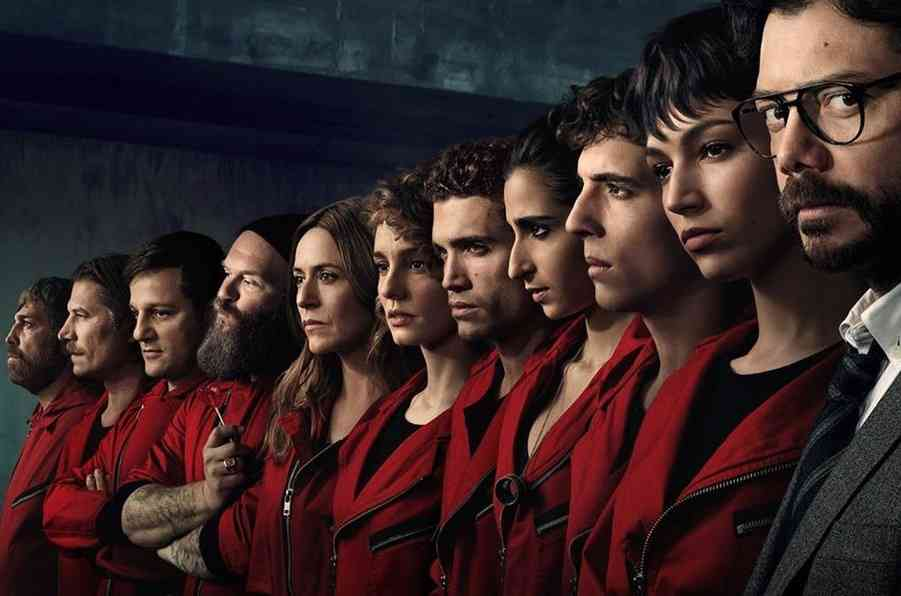

Про серіал
«Паперовий будинок» — іспанський серіал про групу злочинців, які намагаються здійснити найбільше пограбування в історії Іспанії.
Цікаві факти
- Серіал здобув премію «Еммі».
- Маска Далі стала символом протестів.
- Пісня «Bella Ciao» стала хітом.